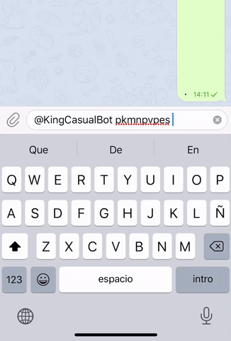

@KingCasualBot
Grupo de ayuda: @kingcasualbotayuda
Donadores
El bot puede seguir funcionando gracias a las donaciones de la gente que ayudan desde Patreon.
Si realizas una donación puedes hacer que los grupos de los que eres creador pasen a ser premium durante un tiempo determinado.
Honor Ball
Zeldabalca, Tina Arroyo, ChampPs y LucasOnrubia
Ultra Ball
SurbitonTolworthPoGo
Documentación para usuarios
1. Eventos
La funcionalidad principal disponible en grupos y en canales es un listado de eventos el cual se puede pedir con el comando /eventos o escribiendo listado de eventos.
También se manda notificación cuando empieza o termina un evento.
Canales de eventos:
- Europe/Madrid: @pokemongoeventos | Twitter
- Portugal: @pokemongoeventosPT | Twitter
- Central European Time: @pokemongoeventsCET
- Western European Time: @pokemongoeventsWET
- Atlantic/Canary: @pokemongoeventosCanarias
- America/Mexico_City: @pokemongoeventosMexicoCity | Twitter
- America/Chihuahua: @pokemongoeventosChihuahua | Twitter
- America/Santiago: @pokemongoeventosSantiago | Twitter
- America/Lima: @pokemongoeventosLima | Twitter
- America/Buenos_Aires: @pokemongoeventosBuenosAires | Twitter
- America/Sao_Paulo: @pokemongoeventosSaoPaulo | Twitter
- America/New_York: @pokemongoeventsNewYork
Los canales de eventos están disponibles en Discord.
2. Comandos
Casual Bot responderá a diversas frases como por ejemplo:
- info huevos / raids / investigaciones / shiny / team rocket [Enlace huevos] | [Enlace raids] | [Enlace investigaciones] | [Enlace shiny] | [Enlace Team GO Rocket]: información sobre huevos, raids, investigaciones, shiny o Team GO Rocket.
Ejemplo: info huevos. - quiero llorar a Niantic [Enlace]: instrucciones de cómo reclamar a Niantic si has perdido un pase premium o similar.
- cuándo es la hora legendaria: indica cuándo suelen ser las horas legendarias.
Los comandos que tienen enlace los puedes poner en un mensaje para que si alguien lo pulsa, le mande la información por privado.
3. Comandos bots
3.1. 🐱 @detectivepikachubot
- enlace al mapa de Pikachu [Enlace]: manda un enlace al mapa de comunidades.
- enlace al mapa de raids: manda un enlace al mapa de comunidades centrado en la zona de tu grupo mostrando el mapa de calor y los anuncios o raids activas (si inicias sesión con Telegram).
Si tienes charla y raids separados puedes usar el comando /setraidid seguido del id del grupo de raids para que el enlace funcione correctamente. - cómo me registro con Pikachu [Enlace]: instrucciones para registrarse.
- cómo crear una raid [Enlace]: instrucciones para crear un anuncio o raid.
- instrucciones invitar pikachu [Enlace]: instrucciones para invitar a una raid.
- buscar entrenador pikachu [Enlace]: instrucciones para buscar entrenadores.
Los comandos que tienen enlace los puedes poner en un mensaje para que si alguien lo pulsa, le mande la información por privado.
4. Comandos PVP/PVE
-
/casualdex Pokémon (pve): información sobre un Pokémon.
Los parámetros entre paréntesis son opcionales.
- pve: mostrar estadísticas de movimientos para PVE.
-
/raidcounters Pokémon (oscuros) (texto): mejores counters contra un Pokémon de raid.
Los parámetros entre paréntesis son opcionales.
- oscuros: incluye Pokémon oscuros.
- texto: devuelve la versión de texto.
-
/breakpoints Pokémon(+movimiento) (IVa) (nivel) (nivel amistad) (clima) (bonus mega) (tier raid): calculadora de breakpoints.
Los parámetros entre paréntesis son opcionales.
- movimiento: movimiento del Pokémon.
- IVa: IV de ataque.
Formato: iv# (donde # es un número entre 0 y 15). - nivel: nivel a tener en cuenta en los cálculos.
Formato: nivel# (donde # es un número entre 1 y 51). - nivel amistad: número de corazones que se tiene con el Pokémon.
Formato: *# (donde # es un número entre 1 y 4). - clima: tener en cuenta bonus por clima potenciado.
- bonus mega: tener en cuenta mega boost.
Formato: megab# (donde # es un número entre 1 y 2). - tier raid: tier raid del que mostrar detalles. Si se omite se muestra tier 5 y Mega.
Formato: tier? (donde ? es 1, 3, 5 o mega).
-
/pokemoncodes Pokémon [liga (básico) (IV mínimo) (amistad)]: códigos para filtrar un Pokémon.
Los parámetros entre corchetes son opcionales y son usados para obtener un código para PVP. Si se quiere obtener este código es necesario incluir la liga (el resto de párametros son opcionales).
- liga: super, ultra o master.
- básico: incluir si quieres el código para la primera fase evolutiva.
- IV mínimo: combinación de IVs mínimos a tener en cuenta en los cálculos (ejemplo: 0/0/0).
Formato: min# (donde # es un número entre 0 y 14). - amistad: hacer los cálculos hasta nivel 51 en vez de 50.
-
/pokemonpvp Pokémon (liga) (IVa/IVd/IVps) (IV mínimo) (nivel mínimo) (amistad) (extra): información relacionada con PVP sobre un Pokémon.
Los parámetros entre paréntesis son opcionales.
- liga: super, ultra o master.
- IVa/IVd/IVps: combinación de IVs a comprobar.
- IV mínimo: combinación de IVs mínimos a tener en cuenta en los cálculos (ejemplo: 0/0/0).
Formato: min# (donde # es un número entre 0 y 14). - nivel mínimo: nivel mínimo a tener en cuenta en los cálculos.
Formato: nivel# (donde # es un número entre 1 y 51). - amistad: hacer los cálculos hasta nivel 51 en vez de 50.
- extra: muestra más información.
-
/moveinfo movimiento: información detallada de un movimiento.
- movimiento: movimiento del Pokémon.
- /elitefast y /elitecharged: lista de movimientos rápidos y cargados que solo están disponibles usando MT élite. Estos comandos solo están disponibles por privado.
- /ligascg y /ligassilph: información sobre las ligas de Liga Combates GO y Silph.
- /silphranking: ranking mejores Pokémon de la copa actual de silph.gg.
5. Modo inline
Telegram ofrece un modo llamado inline el cual permite a los bots poder mandar ciertos mensajes desde cualquier chat si se ha iniciado conversación con estos.
Una vez has iniciado conversación con el bot, para poder usar este modo escribe en un chat @KingCasualBot seguido del comando y sus parámetros.
En el caso del Casual Bot los comandos cmdes, casualdexes, raidcounterses, breakpointses, pkmnpvpes y moveinfoes están disponibles para usarse con este modo.
cmdes
Si pones después una de las frases de los comandos te permite mandarlo.
Ejemplo:
@KingCasualBot cmdes cómo crear una raid
casualdexes, raidcounterses, breakpointses y pkmnpvpes
Los comandos son ligeramente distintos a los comandos de PVP/PVE para poder soportar diversos idiomas.
Los parámetros de estos comandos son iguales que en su versión normal con el añadido de que para indicar una forma alternativa se hace poniendo ?forma.
Ejemplo:
@KingCasualBot pkmnpvpes Giratina ?origen
Documentación para administradores
1. Ajustes
Para acceder a los ajustes del bot pon el comando /settings@KingCasualBot.
1.1. Activar o desactivar el bot
Permite activar o desactivar el bot. Cuando está desactivado se mantiene activo lo siguiente:
- Comandos solo disponibles para administradores (para ahorrar comprobaciones).
- Anti Spam
- Pulsar botón para hablar
- Mensaje de bienvenida
1.2. Ajustes generales
1.2.1. Comandos
Para activar o desactivar la opción de comandos.
1.2.2. Comandos bots
Para activar o desactivar, de forma individual, los comandos bots.
1.2.3. Comandos PVP/PVE
Para activar o desactivar la opción de comandos PVP/PVE.
1.2.4. Borrar mensajes comunes
Si se activa esta opción, Casual Bot borrará mensajes del estilo "alguién más se apunta", "si va más gente me apunto", "estoy por apuntarme a", etc.
1.2.5. Borrar códigos de amigo
Con esta opción se borrarán los mensajes que contengan códigos de amigos. Se incluyen capturas de pantalla (salvo las que estén recortadas de forma extraña).
Se puede poner un mensaje cuando Casual Bot borra un código de amigo usando el comando /fctextcasual seguido del mensaje que quieres poner.
Para borrar el mensaje pon /fctextcasual -.
Para obtener el mensaje actual usa el comando /getfctextcasual.
1.2.6. Anti Spam
Casual Bot borrará los mensajes de spam y baneará al miembro que mandó el mensaje.
1.2.7. Pulsar botón para hablar
Con esta opción cuando entre un nuevo miembro al grupo tendrá que responder a una pregunta pulsando un botón. El mensaje tiene un retardo de 1 segundo para que en el caso de tener otro bot con mensaje de bienvenida, esta se muestre primero.
Si se tiene un mensaje de bienvenida configurado con otro bot y se quiere usar esta opción, lo más recomendable es configurar el mensajes de bienvenida con Casual Bot ya que solo se mostraría si el nuevo miembro pulsa el botón correcto.

1.3. Eventos
Si no has activado los eventos, te pedirá que actives lo actives. Después de hacer esto (o si ya las tenías activadas), podrás activar o desactivar el comando /eventos, la notificación diaria (a las 8:50) con el listado de eventos o las notificaciones cuando empieza o termina un evento.
Para poder modificar estos ajustes el grupo tiene que tener por lo menos 40 miembros.
1.4. Noticias
Permite que se reenvien al grupo los mensajes que se mandan en diversos canales de noticias.
Para poder modificar estos ajustes el grupo tiene que tener por lo menos 16 miembros.
1.5. Temporizadores
Permite que se borren algunos mensajes pasado el tiempo que se indique.
1.6. Notificaciones nocturnas
Permite configurar el comportamiento del algunos mensajes que se manden de 1:00 a 7:59.
✅: enviar con sonido
🔇: enviar sin sonido
❌: no enviar
1.7. Zona horaria
Permite cambiar la zona horaria del grupo. Esto sirve para recibir las notificaciones de los eventos y las alertas cuando corresponden.
1.8. Idioma
Permite cambiar el idioma del bot.
2. Botones
Se pueden incluir botones en las alertas, mensaje al borrar un código de amigo y mensajes de bienvenida.
Además se puede usar el comando /casualbotones para que el bot devuelva un mensaje con botones.
Formato:
"Texto botón" = "https://enlace.com"
Para poner más de un botón en la misma fila, pon una coma. Ejemplo:
"Texto 1" = "https://enlace1.com", "Texto 2" = "https://enlace2.com"
Ejemplo:
Texto
"Texto botón" = "https://enlace.com"
3. Alertas
Se pueden mandar mensajes de forma periódica. Hay un límite de 10 alertas y se configuran con el comando /alertcasual.
Ejemplo del comando:
/alertcasual 1 2019/10/14-12 3 10-18 Texto alerta
Ayuda:
1: número de la alerta (puede ser un número entre 1 y 10)
2019/10/14-12: fecha de referencia con el formato: año/mes/día-hora
3: frecuencia en horas con la que se repite la alerta
10-18: período de tiempo en el que se manda la alerta
3.1. Anclar una alerta
Si quieres que Casual Bot ancle la alerta que manda puedes usar los parámetros anclarnotificar (notifica a los miembros del grupo) o anclar.
Ejemplo: /alertcasual 1 2019/10/14-12 3 10-18 anclarnotificar Texto alerta.
3.2. Obtener una alerta
Si tienes una alerta y quieres editarla puedes obtener el contenido de la alerta (lo que pusiste con el comando /alertcasual). Para ello usa el comando /getalert seguido del número de la alerta. Ejemplo: /getalert 1
Si quieres ver todas las alertas del grupo escribe /getalert all.
3.3. Eliminar una alerta
Para eliminar una alerta escribe el comando /alertcasual seguido del número de la alerta y después -. Ejemplo: /alertcasual 1 -.
3.4 Imagen en alertas [PREMIUM]
Instrucciones para añadir una imagen en una alerta:
- Manda una imagen al grupo.
- Cita la imagen y pon el siguiente comando: /alertimagecasual #
Instrucciones para borrar una imagen de bienvenida:
- Escribe: /alertimagecasual # -
En ambos casos # se refiere al número de la alerta.
4. Mensaje de bienvenida
Para añadir un mensaje de bienvenida usa el comando /welcomecasual seguido del mensaje de bienvenida.
Ejemplo: /welcomecasual Hola casual.
Para borrar el mensaje de bienvenida pon /welcomecasual -.
Para consultar el mensaje de bienvenida actual pon /getwelcomecasual.
4.1 Imagen en mensaje de bienvenida [PREMIUM]
Instrucciones para añadir una imagen de bienvenida:
- Manda una imagen al grupo.
- Cita la imagen y pon el siguiente comando: /welcomeimagecasual
Instrucciones para borrar una imagen de bienvenida:
- Escribe: /welcomeimagecasual -
5. Etiquetas HTML en mensajes
Se pueden añadir etiquetas HTML en alertas, mensaje al borrar un código de amigo, mensajes de bienvenida y con el comando /casualbotones.
Etiquetas:
- Negrita: <b>texto</b>
- Cursiva: <i>texto</i>
- Subrayado: <u>texto</u>
Tachado:<s>texto</s>Mono espaciado:<code>texto</code>
6. Sustitución de texto en mensajes
Se puede sustituir texto en mensaje al borrar un código de amigo y mensajes de bienvenida.
Etiquetas:
- Nombre del nuevo miembro: {user_name}.
- Id del nuevo miembro: {user_id}.
- Nombre del nuevo miembro e id: {user_name_id}.
- Nombre del grupo: {chat_title}.
Grupos premium
Si realizas una donación desde Patreon puedes hacer que los grupos de los que eres creador pasen a ser premium durante un tiempo determinado.
Ventajas de los grupos premium:
- Prioridad extra a la hora de recibir los eventos y noticias.
- Poder activar eventos y noticias en grupos con pocos miembros.
- Se pueden configurar 25 alertas en vez de 10.
- Se puede establecer una imagen en el mensaje de bienvenida.
Tablas con información
A continuación se muestran unas tablas con información adicional del bot.
1. Funcionalidades
Leyenda:
✅: disponible
❌: no disponible
?: desactivado por defecto
+XX👨👩👧👦: solo grupos con +XX miembros
| Funcionalidad | Privado | Grupos |
|---|---|---|
| Comando eventos | ✅ | ? +40👨👩👧👦 |
| Notificación diaria (eventos) | ❌ | ? +40👨👩👧👦 |
| Notificación evento empezado/terminado | ❌ | ? +40👨👩👧👦 |
| Comandos | ✅ | ? |
| Comandos PVP/PVE | ✅ | ? |
| Ajustes | ❌ | ✅ |
| Noticias | ❌ | ? +16👨👩👧👦 |
| Alertas | ❌ | ✅ |
| Borrar mensajes comunes | ❌ | ? |
| Borrar códigos de amigo | ❌ | ? |
| Anti Spam | ❌ | ? |
| Pulsar botón para hablar | ❌ | ? |
| Mensaje de bienvenida | ❌ | ✅ |
2. Permisos necesarios
Si el grupo tiene el modo lento activado es muy recomendable que se añada al bot como administrador para que no se le apliquen las restricciones de tiempo al mandar mensajes.
| Funcionalidad | Permisos |
|---|---|
| Comando eventos | Eliminar mensajes (recomendado) |
| Notificación diaria (eventos) | - |
| Notificación evento empezado/terminado | - |
| Comandos | - |
| Comandos PVP/PVE | Eliminar mensajes (recomendado) |
| Ajustes | Eliminar mensajes (recomendado) |
| Noticias | - |
| Alertas | - |
| Anclar alertas | Anclar mensajes |
| Borrar mensajes comunes | Eliminar mensajes |
| Borrar códigos de amigos | Eliminar mensajes |
| Anti Spam | Eliminar mensajes, suspender usuarios |
| Pulsar botón para hablar | Eliminar mensajes (recomendado), suspender usuarios |
| Mensaje de bienvenida | - |
Preguntas frecuentes
1. ¿Cómo evito el spam?
El bot cuenta con 2 opciones para evitar el spam:
La primera sirve para banear las cuentas que ya estén en el grupo y manden un mensaje que el bot considere como spam.
La segunda sirve para evitar que las cuentas que mandan spam se queden en el grupo. En la práctica esta opción es la más efectiva ya que el filtro anti spam podría no saltar.
Normas de uso
Solo pueden usar el bot usuarios o grupos que cumplan las Condiciones de Servicio de Niantic.
Si se incumplen dichas condiciones, se podría banear de poder usar el bot al usuario o grupo (normalmente de forma permanente).